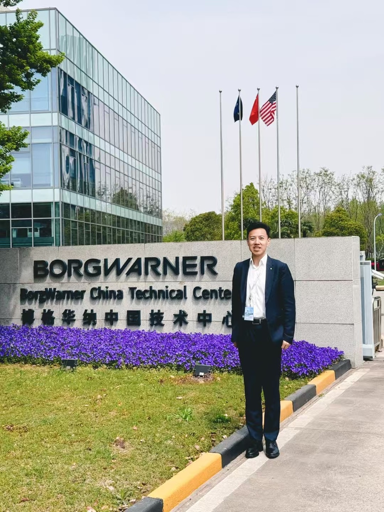
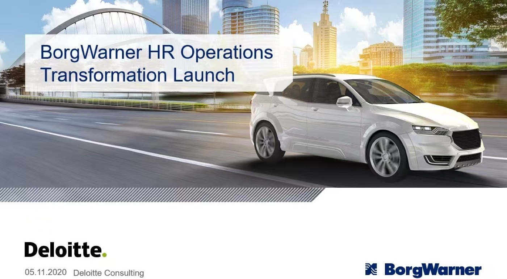
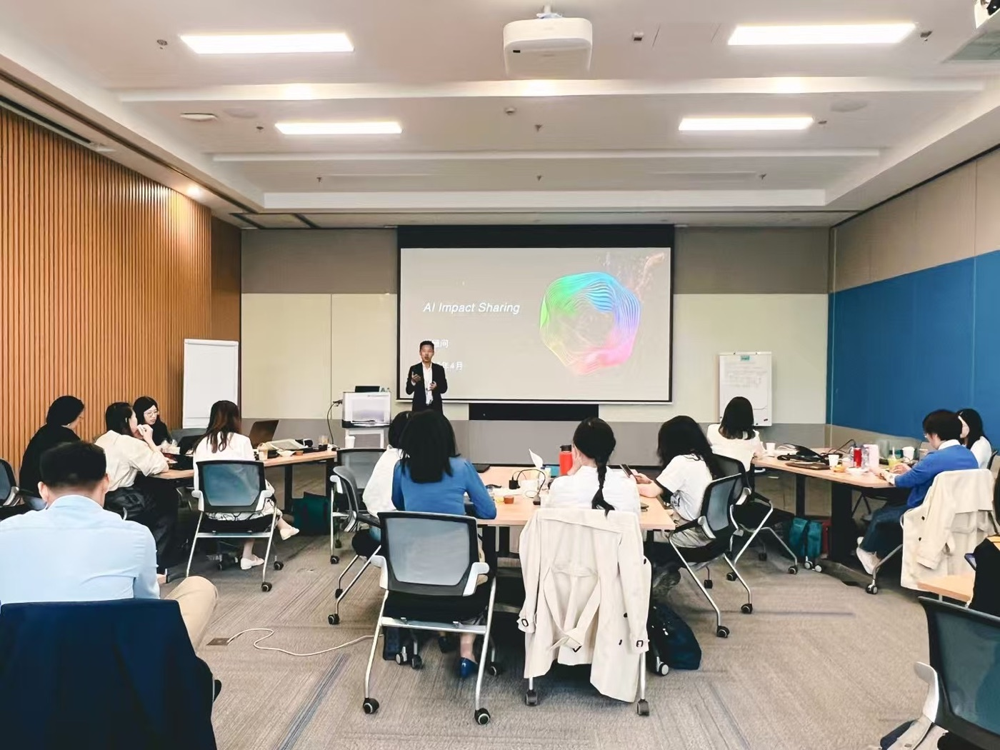
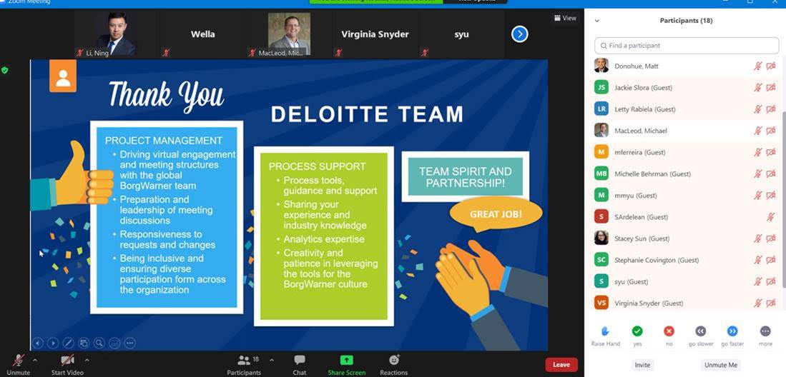
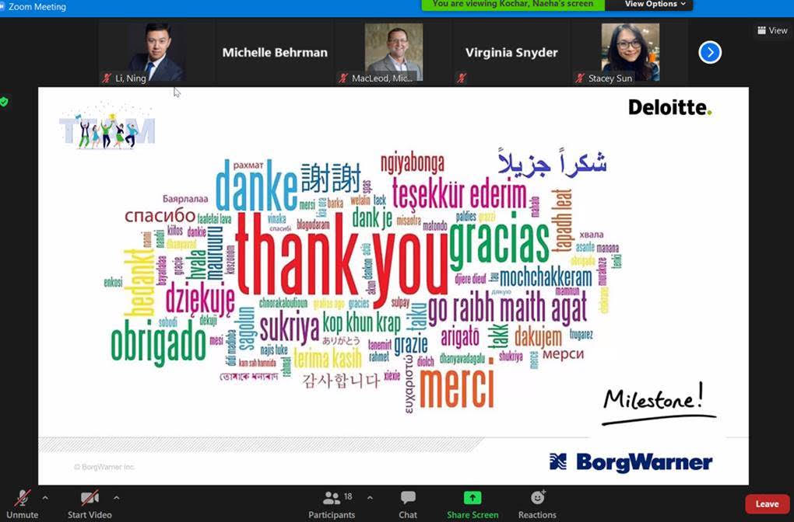
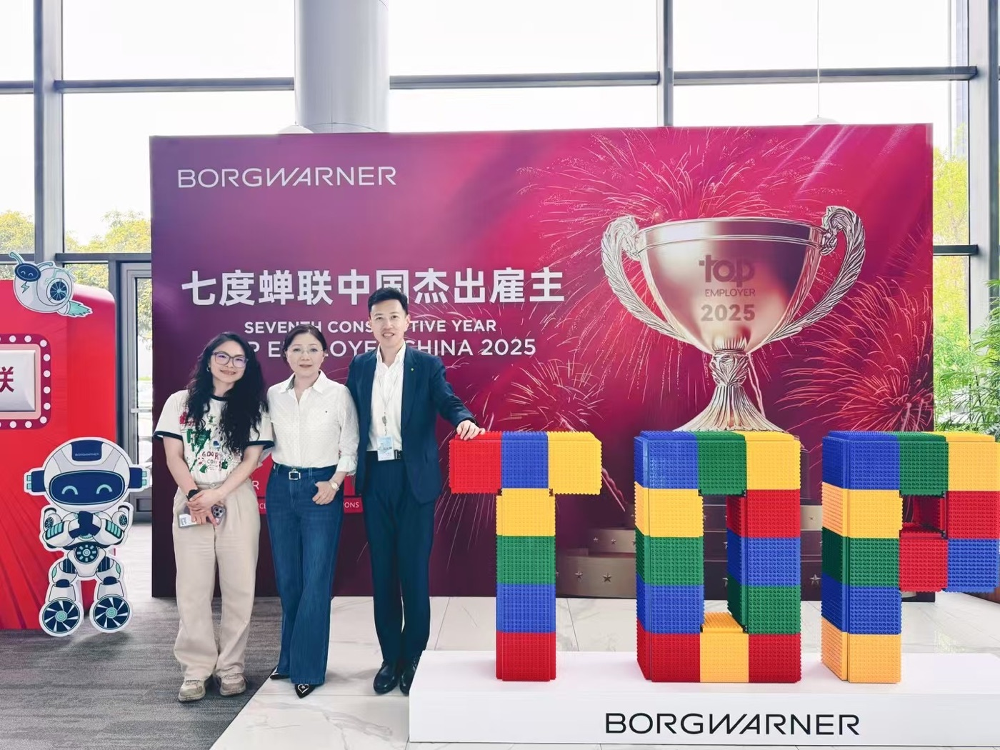

Client case · Global HR shared services · 2020
Client case: a globally leading automotive group
After the combination of two major international automotive businesses, I worked as Deloitte's China-side project manager on global HR shared-services feasibility and operating-model design, aligning regional requirements, global consulting teams and senior client stakeholders.
- Project year
- 2020
- Regions
- China · Americas · Europe
- Delivery
- Feasibility and roadmap

Project context
Client context after the merger
The project took place after a global automotive group combined two major international automotive businesses. The objective was to assess the feasibility of a global HR shared-services model and develop a high-level implementation roadmap covering China, the Americas and Europe.
The biggest challenge was not the technical design. Some regions already operated their own shared services, and regional HR leaders were concerned that a global HRSSC model could reduce decision-making authority, weaken regional autonomy and disrupt existing service delivery.
The project therefore had to answer two questions at once: whether global shared services could create business and operating value, and how regions could accept a scalable common direction while preserving legitimate local requirements.
- Context
- Combination of two international businesses
- Project scope
- Global HRSSC feasibility
- Regions
- China · Americas · Europe

My responsibility
Client project responsibility
As Deloitte's China-side project manager, I coordinated senior client business and HR stakeholders, integrated input from Deloitte's global consulting teams and supported alignment on the proposed future operating model.
My central responsibility was to move the discussion from protecting existing regional structures towards identifying a globally scalable model that could deliver business value while respecting legitimate local requirements.
The work required managing project progress, complex stakeholder relationships and different regional interpretations of the facts, options and trade-offs.

How I influenced stakeholders
Client stakeholder approach
Bring objectives, facts and trade-offs into one discussion, then broaden collaboration through pilots and early results.
-
01
Client project governance
From kick-off, we engaged key business and HR executives in a shared understanding of the project's objectives and expected value, supported by regular communication and monthly leadership reviews.
-
02
Client operating-model evidence
Global HR transformation methods, automotive benchmarks and operating-model experience helped regional leaders assess the HRSSC from a business and operating perspective, not only as a transfer of authority.
-
03
Regional client pilots
We worked first with regional teams that were more supportive, exploring pilots and practical implementation approaches that could inform the future roadmap.
-
04
Client stakeholder engagement
Early work built confidence in the proposed direction and provided a foundation for engaging leaders who were initially more hesitant.

Business impact
Client outcomes
- Feasibility assessmentCompleted within the agreed timelineOn time
- High-level roadmapCovering China, the Americas and EuropeAccepted
- Global shared-services directionA common basis for evaluating the future modelShared direction
- Future transformation planningA starting point for phased implementationFoundation

Key learning from the client project
Resistance is not always a refusal to change. It often reflects legitimate concerns about decision rights, accountability and the future of a team. Effective transformation leadership requires understanding those concerns, building trust and helping stakeholders see how a proposed change can create value for the broader organisation.

Business partnering is not only about technically sound HR solutions. It is also about understanding business priorities, influencing stakeholders and helping leaders make informed organisational decisions.
Throughout the project, I worked closely with Deloitte's international consulting teams to integrate Chinese, Americas and European perspectives into one coherent set of recommendations for senior client decision-makers.
Client-site notes
Client project site
These are supplementary records of the client's workplace, employer-brand activities and later exchanges. Their dates do not necessarily match the 2020 project period and they are not presented as evidence of project outcomes.

